Reviewer for BMVC 2026
Served as a peer reviewer for the British Machine Vision Conference.
Computer Science PhD Student
Oklahoma State University
My work focuses on designing machine learning architectures for real-world scientific and engineering applications, particularly in high-energy physics and precision agriculture. I also work on improving model efficiency through transfer learning and model-compression methods, including knowledge distillation, quantization, and pruning, to reduce computational cost and enable faster inference. Another area of my research is multimodal learning, with a focus on modality imbalance and the effective integration of information across different data sources. Alongside this research, my industry experience centers on turning models into reliable production systems through scalable APIs, automated deployment pipelines, forecasting services, and observability.
I currently work in rAIson (Reasoning & AI Laboratory) at Oklahoma State University under the supervision of Dr. Atriya Sen.
About
At Oklahoma State University’s rAIson (Reasoning & AI Laboratory), under the supervision of Dr. Atriya Sen, I develop machine learning methods for scientific and engineering applications. My work includes efficient learning and model compression, multimodal learning and modality imbalance, physics-guided models for high-energy physics, and multimodal methods for precision agriculture. I also teach and mentor students as a Graduate Teaching Assistant in Computer Science.
My industry work covers the full machine learning lifecycle, from data collection and model development to deployment and monitoring. At eBay, I built forecasting and hotspot-analysis systems for storage infrastructure and deployed them with FastAPI, Docker, Kubernetes, Prometheus, and automated reporting workflows. Earlier projects included distributed data ingestion, neural machine translation, and backend platforms on AWS.
Updates
Served as a peer reviewer for the British Machine Vision Conference.
PhyGHT was accepted to the KDD 2026 AI4Sciences Track.
Received Google Cloud Research Credits to support research computing.
Began a Summer 2026 internship building ML-powered storage intelligence for the NuBlox platform.
A short paper was accepted at the 2025 IJCNLP-AACL conference.
Successfully completed Oklahoma State University’s Computer Science PhD comprehensive examination.
Successfully completed Oklahoma State University’s Computer Science PhD diagnostic examination.
First-author work on gradient-guided distillation for multimodal learning was accepted at ICCV.
A short paper was accepted at the 2025 IEEE/ACM International Conference on Advances in Social Networks Analysis and Mining.
Served as a peer reviewer for the International Conference on Computer Vision.
Academic background

2023 - Present
Oklahoma State University
Stillwater, Oklahoma
2023 - May 2026
Oklahoma State University
Stillwater, Oklahoma
Sep 2017 - Sep 2021
North South University
Dhaka, Bangladesh
Background
eBay
rAIson (Reasoning & AI Laboratory), Oklahoma State University
Department of Computer Science, OSU
Neovo Tech Ltd.
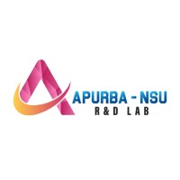
Apurba-NSU R&D Lab
Research output
M. Rakib et al. · KDD 2026, AI4Sciences Track
M. Rakib et al. · ICCV 2025
L. Vaughan, M. Rakib, S. Patel, F. Rizatdinova, A. Khanov, and A. Bagavathi · PAKDD 2025
M. I. Hossain, M. Rakib, M. M. L. Elahi, N. Mohammed, and S. Rahman · IEEE Transactions on Artificial Intelligence
M. Rakib, A. A. Mohammed, C. Diggins, S. Sharma, J. M. Sadler, T. Ochsner, and A. Bagavathi · DSAA 2024
S. M. Rafiuddin, M. Rakib, S. Kamal, and A. Bagavathi · PAKDD 2024
M. Rakib, M. I. Hossain, N. Mohammed, and F. Rahman · ICSCA 2023
S. Mollah, M. Rakib, M. Wasek, A. S. A. Rabby, F. Rahman, and N. Mohammed · ICLR Tiny Papers 2023
M. I. Hossain, M. Rakib, S. Mollah, F. Rahman, and N. Mohammed · ICPR 2022
A. Nawar, M. Rakib, S. A. Hai, and S. Haq · LREC Workshop 2022
M. Rakib, S. Haq, M. I. Hossain, and T. Rahman · ICISET 2022
F. Noor, S. Haq, M. Rakib et al. · Water 14(4), 612
Selected work
Designed a physics-guided hypergraph transformer for pileup mitigation, reaching R² = 0.932 for energy and R² = 0.836 for mass correction under extreme pileup.
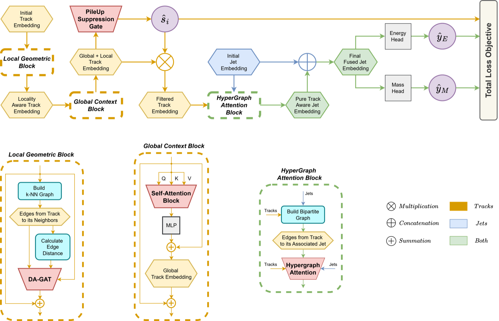
Created an open-source knowledge-distillation framework and Sequential Modality Prioritization technique to counter modality imbalance.
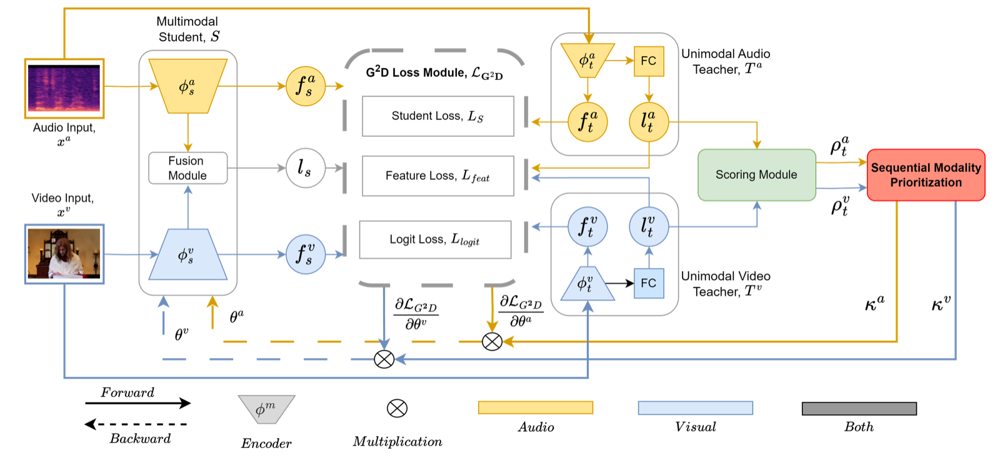
Fused soil-patch imagery with meteorological data, reducing MAPE by 3.25% over meteorological-only models, 2.15% over image-only models, and at least 1.5% over conventional fusion.
Read the paper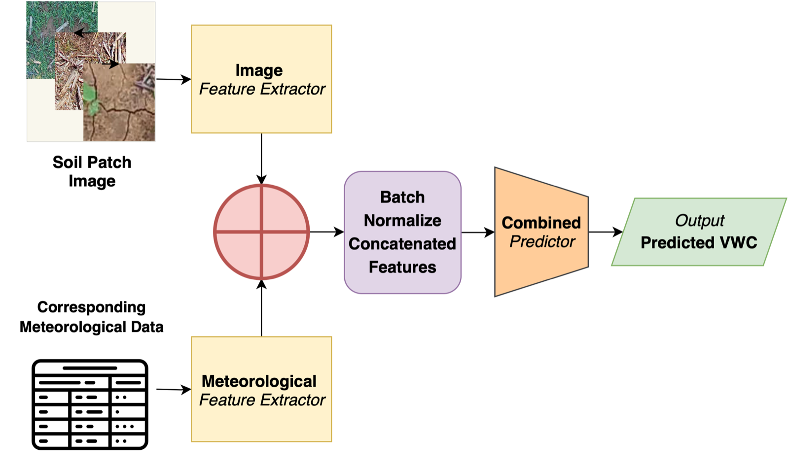
Fine-tuned wav2vec 2.0 on 399 hours of Bengali speech and added an n-gram post-processor, achieving 4.66% WER and 1.54% CER.
Read the paper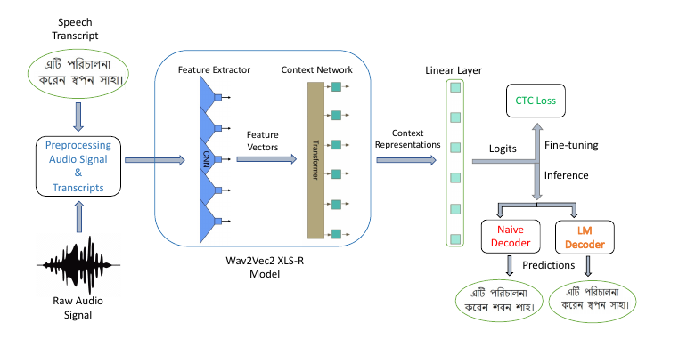
Co-led an end-to-end legal-contract review application, improving RoBERTa-base AUPR by 4% and reaching 20K monthly model downloads.
View project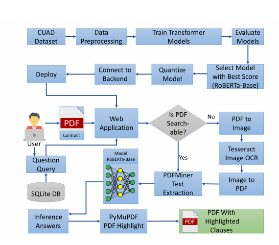
Engineered a distributed k-NN classifier from scratch with a memory-efficient priority-queue reducer and benchmarked it on single- and multi-node Hadoop clusters.
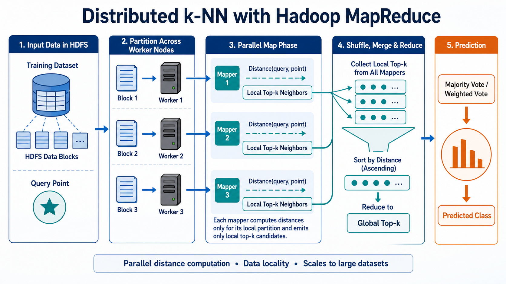
Event-wide attention for HL-LHC pileup mitigation; R² of 0.912 for energy fraction and 0.720 for mass fraction, enabling improved Higgs-boson mass reconstruction.
Paper ↗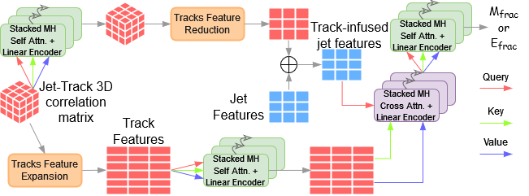
Gradient-learned masking for aspect term extraction and sentiment classification that outperformed comparison methods on SemEval benchmarks.
Paper ↗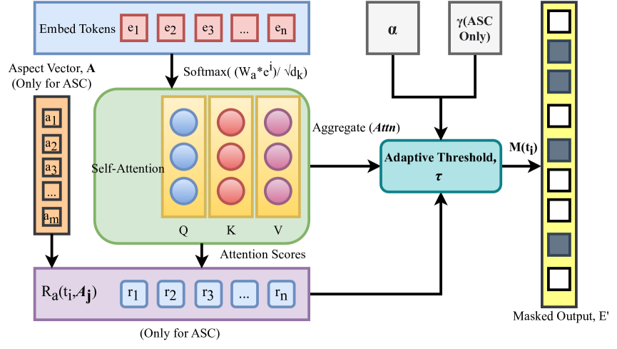
Class-wise overlapping lottery tickets that required fewer pruning iterations than IMP and transferred across datasets without performance loss.
Paper ↗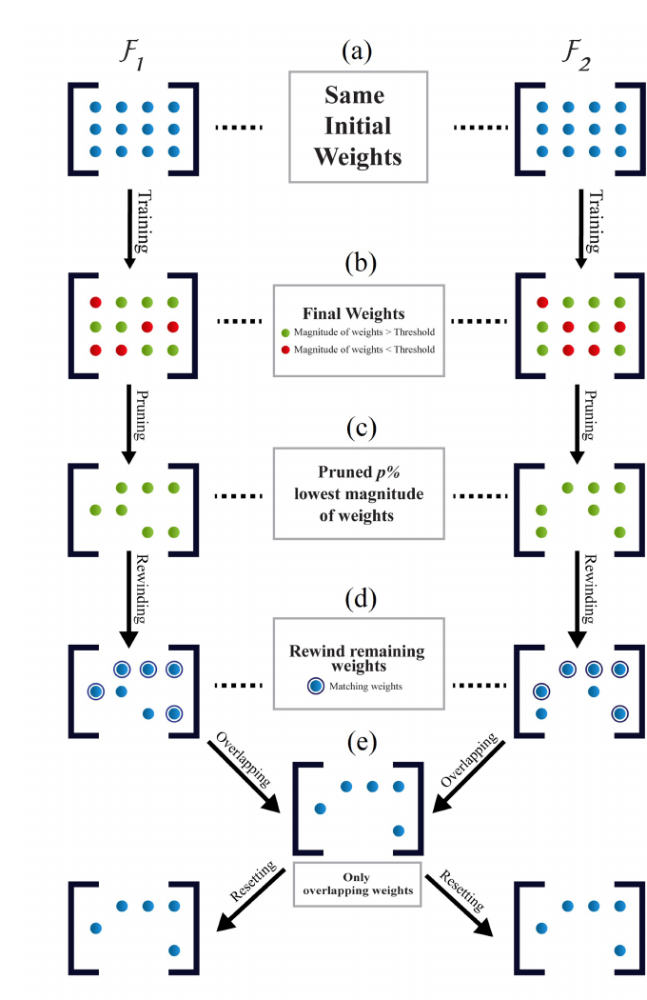
Knowledge distillation for Bangla handwriting recognition, improving minor-class F1-Macro by up to 3.5% and overall word recognition by up to 4%.
Paper ↗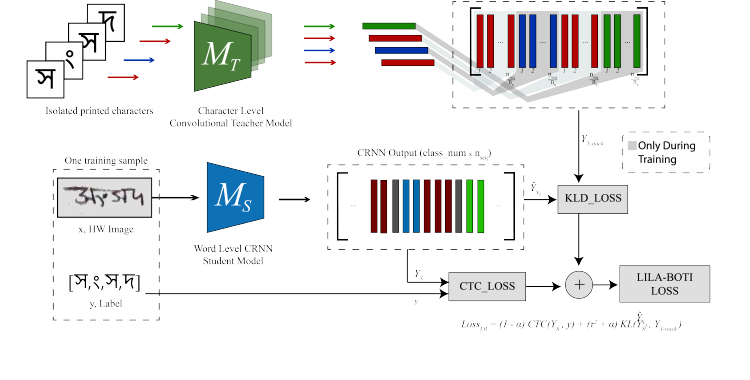
Spatiotemporal attention LSTM for river forecasting in Bangladesh, improving Dhaka-station accuracy by 3.44%.
Paper ↗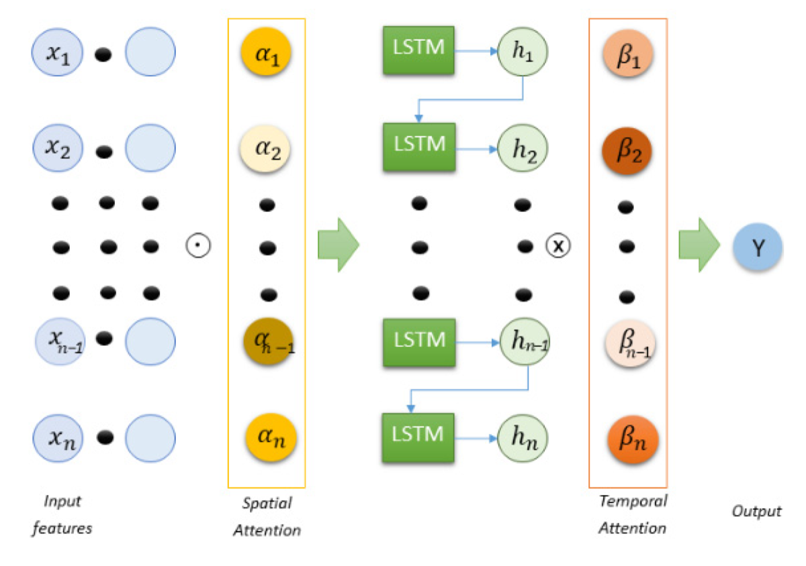
Led a team of three building a sensor-to-cloud system and ARIMA model using 144 hourly observations for next-day forecasts with over 90% reported accuracy.
Paper ↗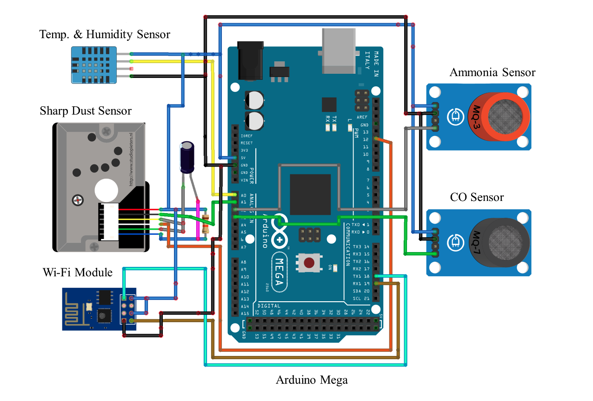
Django learning platform with document sharing, reading-time tracking, and OpenCV-based engagement monitoring.
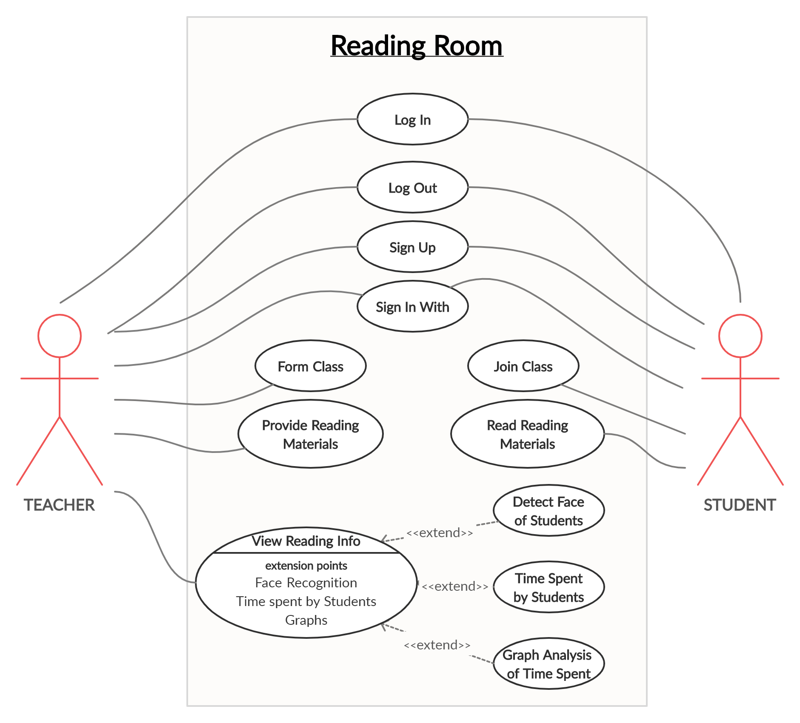
Fine-tuned ResNet-152 with CORAL loss to 9.07-year MAE versus the cited DEX result of 13.1, using 20× fewer samples; CORAL outperformed cross-entropy.
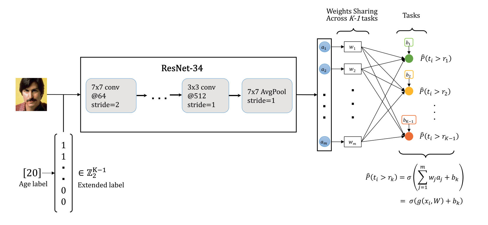
Recognition
$1,000 award supporting research computing.
$400 award supporting research dissemination.
DL Sprint, BUET CSE Fest.
Graduated from NSU with a 3.96 GPA.
MIST ICT Innovation Fest.
75% scholarship for the CSE bachelor’s degree at NSU.
Academic contributions
Peer reviewer
BMVC 2026, CVPR 2025, ICCV 2025, and IJCNN 2024.
Workshop leader
Led an OSU DataBytes workshop on multimodal learning and hands-on PyTorch and deep-learning workshops at NSU.
Student mentor
Mentored teams at the OSU ACM Appathon 2025 ↗.
Volunteer
Supported fundraising for SCARS to assist underprivileged communities.